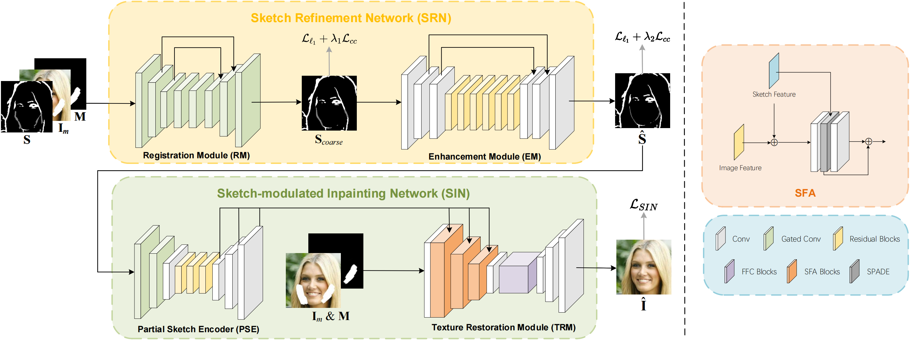

Overview
One tough problem of image inpainting is to restore complex structures in the corrupted regions. It motivates interactive image inpainting which leverages additional hints, e.g., sketches, to assist the inpainting process. Sketch is simple and intuitive to end users, but meanwhile has free forms with much randomness. Such randomness may confuse the inpainting models, and incur severe artifacts in completed images. To address this problem, we propose a two-stage image inpainting method termed SketchRefiner. In the first stage, we propose using a cross-correlation loss function to robustly calibrate and refine the user-provided sketches in a coarse-to-fine fashion. In the second stage, we learn to extract features from the abstracted sketches in a latent space and modulate the inpainting process. We also propose an algorithm to simulate real sketches automatically and build a test protocol to evaluate different methods under real applications. Experimental results on public datasets demonstrate that SketchRefiner effectively utilizes sketch information and eliminates the artifacts due to the free-form sketches. Our method consistently outperforms state-of-the-art baselines both qualitatively and quantitatively, meanwhile revealing great potential in real-world applications.
Pipeline
SketchRefiner consists of two stages: Sketch Refinement Network (SRN) and Sketch-modulated Inpainting Network (SIN). SRN focuses on calibrating the input sketches to boost their usability. Then, SIN utilizes the refined sketches to guide the inpainting process and recover the missing textures.
Sketch-based Test Protocol
To evaluate the usability of sketch-based methods upon real-world applications, we propose a novel sketch-based test protocol. We randomly collect a series of face images as well as scene-level images, and manually annotate the masks and sketches with apple pencil on iPad. Out of demonstration, the test protocol covers challenging real applications including face editing, scene editing, object removal and watermark removal. The proposed testing benchmark would be open-sourced to promote further studies.
Qualitative Comparison
We evaluate the proposed SketchRefiner compared with state-of-the-art methods following previous solutions. Evaluation are implemented upon CelebA-HQ, ImageNet and Places2 datasets. Besides, we implement additional evaluation with real sketches on our proposed sketch-based test protocol. Results using synthetic sketches and real ones demonstrate the superiority of SketchRefiner over other competitors.
Qualitative comparison upon inpainting task and real applications of face images.
Qualitative comparison upon real applications of scene-level images.
More Results
More results upon the proposed test protocol are demonstrated in the following figure.

BibTeX
If you find our work is enlightening or the proposed dataset is useful to you, please cite our TMM 2024 paper.
@@ARTICLE{liu-etal-2024-sketchrefiner,
author={Liu, Chang and Xu, Shunxin and Peng, Jialun and Zhang, Kaidong and Liu, Dong},
journal={IEEE Transactions on Multimedia},
title={Towards Interactive Image Inpainting via Robust Sketch Refinement},
year={2024},
pages={1-15},
}
}